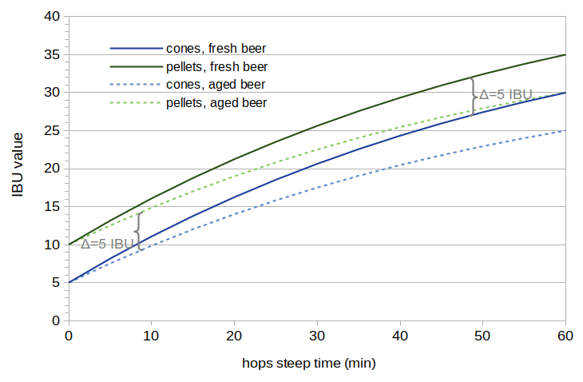
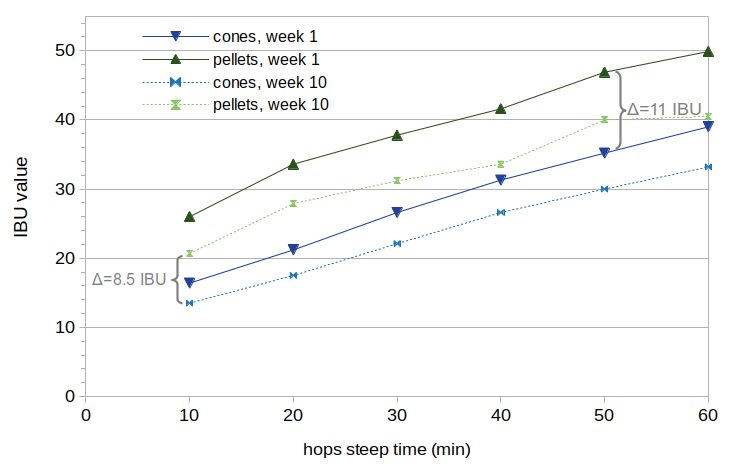
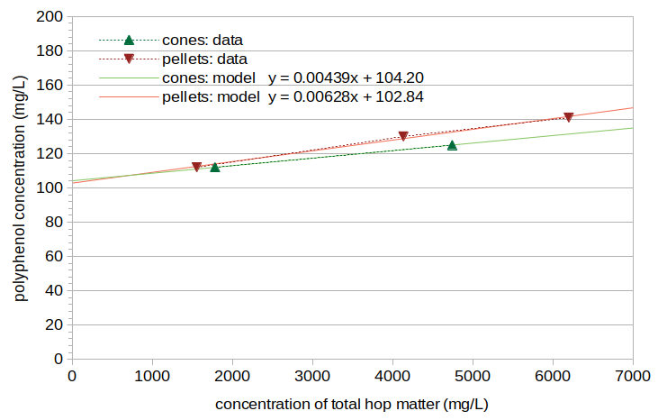
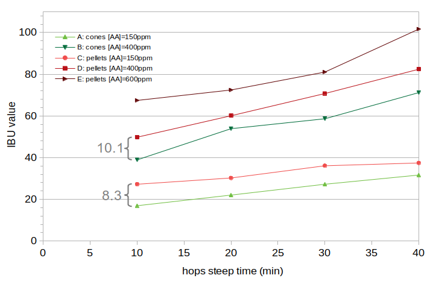

Abstract
Hop pellets are usually described as having higher utilization than hop cones. A separate blog post looks at the amount of increase in IBUs caused by using pellets instead of cones. It finds that the amount of increase is constant over a range of hop steep times, instead of increasing with steep time. This means that the increase in IBUs is not caused by an increase in the rate of alpha-acid isomerization or availability of alpha acids, which would result in longer steep times having a greater increase in IBUs. The first experiment in this post looks at whether this constant increase is more likely to be caused by a greater concentration of isomerized alpha acids (IAA) produced soon after a hop addition, or by other bittering compounds (nonIAA, also called "auxiliary bittering compounds"). This experiment analyzes the rate at which IAA and nonIAA are removed from beer over time, and a comparison is made with the rate at which the increase in IBUs from pellets decreases over time. The results indicate that pellets yield increased IBUs from an increase in auxiliary bittering compounds, not from increased IAA. In other words, the concentration of isomerized alpha acids in finished beer is the same for beer made with cones or pellets, but the concentration of nonIAA is greater in beer made from pellets. Data from a second experiment indicate that while the concentration of polyphenols is greater with the use of pellets, this greater polyphenol concentration cannot explain the observed increase in IBUs. In this experiment, the increase in IBUs from pellets does not increase linearly with the amount of hops added, which is consistent with the IBU increase being caused by oxidized alpha acids. (The same alpha-acid solubility limit that explains relatively lower IAA at higher alpha-acid concentrations can explain the relatively lower production of oxidized alpha acids at higher concentrations.) The most likely explanation for the increase in IBUs when using pellets is that the pelletization process gives the alpha acids greater surface area, and that these exposed alpha acids oxidize quickly when brought into contact with hot wort, creating an increase in the concentration of oxidized alpha acids during the boil.
1. Background: Utilization, Reported Differences, and IBU Models
1.1 Utilization
Hop utilization, U, is the amount of isomerized alpha acids (IAA) in finished beer divided by the amount of alpha acids added to the kettle, and then multiplied by 100 to convert to percent [e.g. Lewis and Young, p. 266]:
| U = 100 × (isomerized alpha acids in beer) / (alpha acids added to kettle) | [1] |
1.2 Reported Differences Between Cones and Pellets
Hop pellets are almost always described as having greater utilization than hop cones [e.g. Daniels p. 78]. According to Michael Lewis and Tom Young, “the alpha acids dissolve most easily from extracts, less easily from pellets …, and least with whole hops” [Lewis and Young, p. 266]. It is said that the higher rate at which alpha acids from pellets "dissolve," compared with whole cones, is because “the pelletization process ruptures the lupulin glands and spreads the resins over the hop particles, giving a larger surface area for isomerization” [Hall, p. 58]. Greg Noonan says that “with pelletized hops, ruptured and better-exposed lupulin glands give greater utilization” [Noonan, p. 154].
1.3 Modeling IBUs from Pellets with Scaling Factors
A previous blog post describes a model of IBUs based on equations from Val Peacock [Peacock, p. 157] and Mark Malowicki [Malowicik, p. 27]. This model can be used to estimate the scaling factors for isomerized alpha acids (IAA) and auxiliary bittering compounds (nonIAA) in beer made from either cones or pellets. Another blog post used those scaling factors to show that the increase in IBUs is modeled well by an increase in the concentration of nonIAA, or by some process that adds IBUs at the beginning of the boil but not during the rest of the boil.
2. Introduction
Although the other blog post on pellet-based IBUs found that the increase in IBUs resulting from the use of pellets was modeled well by an increase in nonIAA concentrations, it is still possible that this increase is actually caused by the rapid production of isomerized alpha acids close to the start of a hop addition, instead of the usual time-dependent alpha-acid isomerization. The model referred to in Section 1.3 groups all compounds that are produced near the beginning of a hop addition as nonIAA compounds, under the assumptions that isomerization is a fairly slow process and that nonIAA compounds are produced quickly. If IAA are also somehow produced quickly after adding hops, this model would not be able to distinguish these IAA from nonIAA.
Perhaps the process of manufacturing pellets (which includes heat [Srečec, pp. 141-143], a primary factor in isomerization [Verzele and De Keukeleire, pp. 102-109]) transforms alpha acids into an intermediate compound which then quickly results in IAA when the pellets are added to boiling wort. Such a process would mean that pellets show increased IBUs because of greater utilization, even if this increase in utilization happens much more quickly than the typical isomerization process. (The existence of such an intermediate compound is postulated simply to explain how the increase in IBUs seen with the use of pellets might be caused by isomerized alpha acids, since the rate of isomerization or availability of alpha acids is not affected when using pellets.)
The rest of this blog post addresses the question of whether the increase in IBUs observed with the use of pellets is more likely to be the result of (a) IAA that are produced soon after a hop addition (i.e. greater utilization), (b) oxidized alpha acids produced when the hops are added to the boiling wort [Algazzali, p. 17; Dierckens and Verzele, p. 454], or (c) hop polyphenols. (It is highly unlikely that this increase is related to oxidized beta acids because of the negligible impact that oxidized beta acids have on the IBU when using well-preserved hops.)
3. Experiment #1: Experimental Overview and Methods
3.1 Overview of Experiment #1
The IBU level and the concentration of IAA in beer decrease over time, especially at room temperature [Peacock, p. 164]. This decrease may be caused by IAA and possibly nonIAA transforming over time into different products or binding with other compounds and precipitating out of solution. In either way, IAA and possibly nonIAA compounds are removed from beer over time. The current analysis assumes that the rate at which IAA and nonIAA compounds are removed from beer is different. By transforming multiple IBU measurements taken from a single beer at multiple points throughout the boil (both fresh beer and aged beer) into estimates of IAA and nonIAA factors in a model of IBUs, we can evaluate how these factors (and therefore IAA and nonIAA concentrations) change with the age of the beer. If the increase in IBUs produced by the use of pellets decreases over time at the same rate as IAA loss, we can conclude that this increase in IBUs is probably produced by IAA. Conversely, if the decrease matches the rate of nonIAA loss, we can conclude that nonIAA compounds are most likely responsible for the increase in IBUs with pellets. (If the different-rate-of-decay assumption is wrong, then the decrease in IAA will be the same as the decrease in nonIAA, and no conclusions will be possible.)
A picture may help to illustrate the overall concept. Figure 1 shows hypothetical cases of (a) IBUs produced using hop cones (solid dark blue line), (b) IBUs produced using hop pellets (solid dark green line), (c) the same cone-produced beer after 10 weeks of aging (dotted light-blue line), and (d) the same pellet-produced beer after 10 weeks (dotted light-green line). This set of hypothetical data is based on two assumptions: (1) the change in IBUs over 10 weeks is due entirely to the loss of IAA; nonIAA compounds do not decrease in beer over time, and (2) the increase in IBUs caused by the use of pellets comes entirely from nonIAA compounds. These assumptions produce a particular pattern in the IBU levels in Figure 1: (a) the solid green line and solid blue line are different by a constant factor (due to nonIAA compounds), (b) the dotted blue line starts at the same value as the solid blue line at 0 minutes, and then gradually decreases relative to the solid blue line (because only IAA levels decrease with age), and (c) the dotted green line and dotted blue line are different by the same constant factor (because the increase in IBUs with pellets comes only from nonIAA, which does not decrease over time). Neither of these assumptions may be true, but we can analyze real IBU data using the model mentioned in Section 1.3 to estimate scaling factors. The scaling factors, which could be used to produce graphs like Figure 1, will tell us how much loss occurs in both IAA and nonIAA over 10 weeks. We can then compare the change in pellet-related IBUs over the 10 weeks to the IAA and nonIAA scaling factors. Comparing the rates at which losses occur will help us determine if the increase in IBUs from the use of pellets is more likely caused by IAA or nonIAA.
 Figure 1. Hypothetical IBU levels from fresh and aged beer made with cones and pellets. The data in this figure are made up in order to illustrate the patterns one might see as IBUs change over time in both types of beer.
I previously brewed two batches of beer that were nearly identical in all respects except for the use of cones in one case and pellets in the other, as part of a previous blog post (Hop Cones vs. Pellets: IBU Differences, Experiment #5). For each batch, I took samples of wort at 10-minute intervals during a 60-minute boil. Each sample was fermented into beer and 4 oz of each was sent to Oregon BrewLab for IBU analysis about 10 days after the start of fermentation. I kept whatever wasn't sent to Oregon BrewLab at room temperature for aging. Those additional 12 samples were sent to Oregon BrewLab for IBU analysis at 10 weeks after the start of fermentation.
3.2 Methods for Experiment #1
All data for this experiment consisted of two batches of beer brewed on the same day, one batch using hop cones and the other using hop pellets. I used 7.0 lbs (3.18 kg) of Briess Pilsen DME in 8.0 G (30.28 l) of water, yielding about 8.5 G (32 l) of wort with a specific gravity of about 1.037. I did not adjust the water profile or pH, which resulted in a pre-boil wort pH of 5.80.
In this experiment, I used Comet cones from Hops Direct (stored in my freezer soon after harvest for about 4 months) and Comet pellets from YCH Hops (lot P92-ZLUCOM5216, about 2½ years old at the time of the experiment). The previous blog post concluded that the age of the hop pellets did not have any impact on the pellet-based increase in IBUs.
I added hops (i.e. started the steep time at 0) after the wort had been boiling for 5 minutes, to avoid the foam associated with the start of the boil. The hops were boiled for a total of 60 minutes with the cover on the kettle (except for taking samples) to minimize evaporation and the resulting changes in specific gravity. I used 1.939 oz (54.96 g) of hop cones (alpha-acid rating 9.70%) and 2.147 oz (60.86 g) of hop pellets (alpha-acid rating 8.76%) to target an initial alpha-acid concentration of 170 ppm in both batches.
Samples were taken every 10 minutes from the start of steeping. Each sample was taken from the boil in a measuring cup and then transferred to an aluminum cup using a wire mesh sieve to remove larger hop particles. For the cones condition, 32-oz (0.95-liter) samples were taken; for the pellets condition, 16-oz (0.44-liter) samples were taken. The aluminum cup was placed in an ice bath and the contents were stirred to cool quickly. Once cooled to 75°F (24°C), the sample was transferred to a sanitized, sealed, and labeled quart (liter) container. I aerated each sample by vigorous shaking for 60 seconds, then added .008 or 0.017 oz (0.24 or 0.48 g) of Safale US-05 yeast (depending on the volume of the sample) to target 750,000 viable cells per ml and degree Plato [Fix and Fix, p. 68]. After all samples were taken, the containers were cracked open to vent, and they fermented for eight days. I swirled the samples every day to remove most of the krausen deposits on the sides of the containers. After fermentation, I sent 4 oz (0.12 l) of each sample to Oregon BrewLab for IBU measurement. The remainder of each sample then proceeded to age for 10 weeks at room temperature. After 10 weeks, another 4 oz (0.12 l) was sent to Oregon BrewLab for IBU measurement.
4. Experiment #1: Results
The estimated room-temperature volume at the start of steeping was 8.34 G (31.57 liters). The specific gravity after 10 minutes of steeping was about 1.0384. The specific gravity after a 60-minute steep time was 1.0396. The small change in specific gravity during the boil (due to keeping the lid on the kettle) means that there is little difference between using the measured IBU values for analysis or normalizing these IBUs by the volume when the sample was taken. For simplicity and clarity, the measured IBU values are used below.
Figure 2 shows the measured IBU values from this experiment. The average difference in IBUs between cones and pellets is shown for both the fresh and aged beer.
 Figure 2. Measured IBU data from beer made with cones or pellets, at 1 and 10 weeks after the start of fermentation. The average IBU difference between cones and pellets at week 1 is 11 IBUs, and the average difference at week 10 is 8.5 IBUs.
5. Experiment #1: Analysis
5.1 Average Differences and Visual Analysis
The increase in IBUs caused by the use of pellets decreases from an average of 11.02 IBUs at week 1 to 8.50 IBUs at week 10. This implies that whatever is causing this increase in IBUs, it does decay as the beer ages. This pellet-based increase in IBUs decayed by a factor of 0.77 over the 10-week period (0.77 = 8.50/11.02).
It appears that the slope of the line changes between weeks 1 and 10 for both cones and pellets, with less of a difference at 10 minutes and more of a difference at 60 minutes, but the effect is subtle. This change in slope is caused by the loss of IAA; a 10% loss of IAA will have less of an absolute effect on 20 IBUs than it will on 40 IBUs. Because the data do not extend back to a steep time of 0, it is difficult to see if the vertical-axis offset of the lines changes with the age of the beer, which would correspond with a decrease in nonIAA concentrations.
In short, whatever is causing the increase in IBUs does decrease with age, and both IAA and nonIAA might decrease with age. To get a more conclusive answer, we need to distill the data in this graph into a smaller set of numbers for easier comparison.
5.2 Model and Scaling Factors
We can use the technique described in Estimating Isomerized Alpha Acids and nonIAA from Multiple IBU Measurements to split the IBU value into estimates of (a) the concentration of IAA and (b) the concentration of other bitter substances measured with the IBU that are called nonIAA. Since nonIAA are predominately oxidized alpha acids (oAA), we can use existing models of the other factors (polyphenols and oxidized beta acids) and focus on estimating the concentration of oAA. (The assumption of oAA as the primary source of nonIAA differences between cones and pellets is examined in Experiment #2. Even if this assumption is incorrect, the model uses a direct translation between the concentration of oAA and total nonIAA, and so the results of this experiment will still be valid for nonIAA although off by a constant scaling factor.)
We can use multiple IBU values from the same batch of beer, along with an equation that describes the isomerization of alpha acids as a function of time and temperature [Malowicki, p. 27], an equation that describes the IBU as a combination of IAA and nonIAA in the finished beer [Peacock, p. 161], and models of polyphenols and oxidized beta acids, to estimate two scaling factors: scalingIAA and scalingoAA. The scalingIAA parameter is the scaling factor that accounts for losses of IAA during the boil, fermentation, and aging; scalingoAA is the scaling factor from the initial concentration of alpha acids in the wort to the concentration of oxidized alpha acids in the beer. With scalingIAA and scalingoAA, as well as the volume of wort, weight of the hops, initial alpha-acid concentration, steep time, original gravity, and models of polyphenols and oxidized beta acids, we can map from IBU value to IAA and oAA concentrations, and vice versa. The IBU values resulting from this analysis are listed in Table 1.
| 10 | 20 | 30 | 40 | 50 | 60 | |
| cones, week 1 (meas., estimate) |
16.4, 15.7 |
21.2, 21.8 |
26.6, 27.0 |
31.3, 31.4 |
35.2, 35.3 |
39.0, 38.5 |
| cones, week 10 (meas., estimate) |
13.5, 12.8 |
17.5, 18.1 |
22.1, 22.6 |
26.6, 26.6 |
30.0, 30.0 |
33.2, 32.8 |
| pellets, week 1 (meas., estimate) |
26.0, 26.4 |
33.6, 32.6 |
37.8, 37.9 |
41.6, 42.5 |
46.9, 46.5 |
49.9, 49.8 |
| pellets, week 10 (meas., estimate) |
20.7, 21.4 |
27.9, 26.6 |
31.2, 31.2 |
33.6, 35.1 |
40.0, 38.4 |
40.5, 41.3 |
5.3 Analysis of Cones Data
The analysis of IBU data of the beer made with hop cones and aged one week resulted in scalingIAA = 0.472 and scalingoAA = 0.067. These results indicate that somewhat less than half of the isomerized alpha acids from this batch made it into the finished beer, and about 7% of the alpha acids added to the wort ended up as oxidized alpha acids in the beer. The analysis of beer made with hop cones and aged 10 weeks resulted in scalingIAA = 0.414 and scalingoAA = 0.049.
From these results, we can estimate that IAA levels decayed by a factor of 0.877 over the 10 weeks (0.877 = 0.414/0.472), and nonIAA levels decayed by a factor of 0.731 (0.049/0.067). The decrease over time attributed to pellet-specific factors (0.77 from Section 5.1) is closer to 0.73 than it is to 0.88, and so this suggests that the pellet-based increase in IBUs is more likely to be caused by oxidized alpha acids.
5.4 Analysis of Pellet Data
We can perform a similar analysis on the set of pellet data. However, we don't want to include the effect of the increase in IBUs caused by pellets in our analysis results, so when we estimate values for scalingIAA and scalingoAA, we add 11.02 IBUs to the model of week-1 data and 8.50 IBUs to the model of week-10 data. (Or, equivalently, we can subtract 11.02 from the measured values from week 1 and 8.50 from the measured values at week 10.) When this is done, the beer made with hop pellets and aged one week results in scalingIAA = 0.484 and scalingoAA = 0.059. The beer made with hop pellets and aged 10 weeks results in scalingIAA = 0.411 and scalingoAA = 0.047.
From these results of pellet-based IBUs, we can estimate that IAA levels decayed by a factor of 0.849 over the 10 weeks (0.849 = 0.411/0.484) and nonIAA levels decayed by a factor of 0.797 (0.047/0.059). While this difference between IAA and nonIAA degradation is smaller than that estimated for cones, the decrease over time attributed to pellets (0.77) is even slightly less than the estimated nonIAA decay factor for pellets (.797). This indicates again that the pellet-based increase in IBUs is more likely to be caused by nonIAA compounds than by IAA.
The IAA scaling factor (scalingIAA), oxidized alpha acid scaling factor (scalingoAA), and root-mean-square (RMS) error resulting from this analysis are listed in Table 2.
| IAA scaling factor | oAA scaling factor | RMS error | |
| cones, week 1 | 0.472 | 0.067 | 0.429 |
| cones, week 10 | 0.414 | 0.049 | 0.461 |
| pellets, week 1 | 0.484 | 0.059 | 0.613 |
| pellets, week 10 | 0.411 | 0.047 | 1.106 |
5.5 Averaged Analysis
The results in this study rely on parameter estimation that is subject to errors in the model, in the "known" values used in this model (i.e. the concentration of alpha acids at the start of steeping), and in the measured IBU values. The pellet-based decay factor (0.77) is somewhat higher than the estimated nonIAA factor for cones (0.73), and the pellet-based decay factor is somewhat lower than the estimated nonIAA factor for pellets (0.80).
Assuming that these differences in results for cones and pellets are due to errors in the "known" or measured values, we can average the IAA and nonIAA decay factors (or the scaling factors) to arrive at a more robust combined estimate. This averaging yields an IAA decay factor of 0.86 and a nonIAA decay factor of 0.76. From these averaged values, we can conclude that the increase in IBUs caused by pellets (with a decay factor of 0.77) is most likely due entirely to nonIAA.
6. Experiment #2: Experimental Overview and Methods
6.1 Overview of Experiment #2
Having concluded in Experiment #1 that the increase in IBUs is more likely to come from nonIAA than from IAA, Experiment #2 looked at which of the components that are collectively referred to as nonIAA might be responsible for the increase. While Experiment #1 modeled the nonIAA increase assuming oxidized alpha acids are the unknown scaling factor, it is possible that this assumption is not correct, and that (for example) oxidized alpha acids are constant while the concentration of polyphenols is actually responsible for the increase in IBUs.
Malt polyphenols can obviously not be responsible for a change in IBUs caused by the type of hops used, and oxidized beta acids have a negligible impact on IBUs when using well-preserved hops. This leaves oxidized alpha acids and hop polyphenols as the possible contributors. It is possible that, even though hop polyphenols normally contribute only a small amount to the IBU [e.g. Shellhammer, p. 177; Almaguer, p. 300], the pelletization process produces such an increase in soluble hop polyphenols that this increase can explain the IBU differences between cones and pellets.
In order to test this theory, Oregon BrewLab measured the polyphenol concentrations in beer made with varying concentrations of hop cones and varying concentrations of hop pellets. While isomerized alpha acids do not increase linearly with an increase in alpha acids, polyphenols should not have a solubility limit at even fairly high hopping rates. We can then plot the change in polyphenol levels as a function of concentration to determine (a) the concentration of malt polyphenols, (b) the rate of increase of hop polyphenols when using cones, (c) the rate of increase of hop polyphenols when using pellets, and (d) whether any differences in the polyphenol concentrations between cones and pellets might explain the observed increase in IBUs from pellets.
6.2 Methods for Experiment #2
The data for this experiment consisted of five batches of beer brewed on the same day, two batches using hop cones and the other three batches using hop pellets. Batch A used 0.76 oz (21.68 g) of cone hops with AA rating 8.32%. Batch B used 2.04 oz (57.81 g) of the same cone hops. Batch C used 0.67 oz (18.89 g) of pellet hops with AA rating 9.55%. Batch D used 1.78 oz (50.37 g) of the same pellet hops. Finally, Batch E used 2.66 oz (75.55 g) of the same pellet hops. These weights, when used with the expected volume of wort when hops were added and with the estimated alpha-acid ratings, were designed to result in initial alpha-acid concentrations of 150 ppm, 400 ppm, 150 ppm, 400 ppm, and 600 ppm for Batches A through E, respectively. Therefore Batches A and C can be directly compared, and Batches B and D can be directly compared.
For each batch, I used 2.88 lbs (1.31 kg) of Briess Pilsen DME in 3.32 G (12.57 l) of water, yielding about 3.47 G (13.14 l) of wort with a specific gravity of about 1.036. I did not adjust the water profile or pH, which resulted in a pre-boil wort pH of 5.77.
The hops used in this experiment were from the same source as in Experiment #1. This experiment was conducted nine months after the first; during that time, the hops were stored at about −9°F (−23°C) in vacuum-sealed bags. I added hops (i.e. started the steep time at 0) after the wort had been boiling for 5 minutes, to avoid the foam associated with the start of the boil. Samples were taken every 10 minutes from the start of the hop addition, for a total steep time of 40 minutes (4 samples). Each 15-oz (0.44-liter) sample was taken from the boil in a measuring cup and then transferred to an aluminum cup using a wire mesh sieve to remove larger hop particles. The aluminum cup was placed in an ice bath and the contents were stirred to cool quickly. Once cooled to 75°F (24°C), the sample was transferred to a sanitized, sealed, and labeled quart (liter) container. I aerated each sample by vigorous shaking for 60 seconds, then added .009 oz (0.25 g) of Safale US-05 yeast. After all samples were taken, the containers were cracked open to vent, and they fermented for nine days. After fermentation, I sent 4 oz (0.12 l) of each sample to Oregon BrewLab for IBU measurement. The sample taken at 10 minutes of steep time was also analyzed by Oregon BrewLab for polyphenol concentration.
7. Experiment #2: Results
The measured polyphenol levels were, for Batches A through E respectively: 112 mg/L, 125 mg/L, 112 mg/L, 130 mg/L, and 141 mg/L. Figure 3 shows these polyphenol concentrations plotted as a function of the estimated concentration of total hop matter in the wort at the time the sample was taken (10 minutes of steeping). The cone polyphenol concentrations are shown with green points and connecting dashed lines, and the pellet concentrations are shown with red points and connecting dashed lines. The cones data and pellets data were each fit to a linear function (referred to as "model" in Figure 3), which are plotted in lighter green and red with solid lines.
Figure 4 shows the measured IBU values from this experiment, with cones in green and pellets in red. The average difference in IBUs between Batches A and C is 8.3 IBUs, and the average difference between Batches B and D is 10.1 IBUs.
 Figure 3. Concentration of polyphenols as a function of the concentration of total hop matter. Data for cones are plotted in green; data for pellets are plotted in red. The raw data are shown with triangles and dashed lines. The best linear fit to the data is shown using solid lines.
 Figure 4. Measured IBU values for the five batches of beer in Experiment #2. Values for hop cones are shown in green, and pellets are shown in red. The average difference between Batches A and C is 8.3 IBUs, and the average difference between B and D is 10.1 IBUs.
8. Experiment #2: Analysis
In Experiment #2, the results from cones indicate a malt polyphenol concentration of 104.20 mg/L (when the hop polyphenol concentration is zero), and the results from pellets indicate a malt polyphenol concentration of 102.84 mg/L. On average, the results indicate that in this experiment the malt contributed 103.5 mg/L of polyphenols. The model of polyphenols developed in The Contribution of Malt Polyphenols to the IBU predicts 97.66 mg/L from the specific gravity and boil time, which is within 6% of the measured values. The model of IBUs developed in that blog post predicts 0.81 IBUs from the malt polyphenols, based on the specific gravity and wort pH.
We can use the slope of the lines in Figure 3 to estimate what percent of the weight of the hops comes from polyphenols. First, we assume that 20% of polyphenols dissolve in wort [Forster, p. 124] and that there is a fermentation loss factor of 0.70 (estimated in The Contribution of Malt Polyphenols to the IBU and assuming the same loss factor for malt and hop polyphenols). From those assumptions and the slope of the lines in Figure 3, the hop cone polyphenols are 3.1% of the weight of the hops, and the pellet polyphenols are 4.5% of the weight of the hops. Both of these values are within published estimates that hop polyphenol levels are in the range from 2% to 6% of the weight of the hops [Shellhammer, p. 169; Hough et al., p. 422; Algazzali, p. 5; Verzele and De Keukeleire, p. 9]. In general, the hop pellets here demonstrate a 43% increase in polyphenol concentrations, compared with hop cones (0.00628 / 0.00439 = 1.43 or 43% increase).
We can then use the slope of the lines in Figure 3 to estimate the IBUs contributed by the hop polyphenols. Ellen Parkin reports that "an increase of 100 mg/L of polyphenols was predicted to increase the [IBU] value by 2.2" [Parkin, p. 28], and so the increase in hop polyphenols in Figure 2 can be mapped to an increase in IBU levels using a conversion factor of 0.022 from concentration (in mg/L) to IBUs. Using this conversion results in estimates of 0.17, 0.21, 0.46, 0.57, and 0.85 IBUs for Batches A through E, respectively.
Figure 4 shows the measured IBU values from this experiment. The average difference between Batches A and C is 8.2 IBUs, and the average difference between Batches B and D is 10.1 IBUs. The first point of interest is that the observed increase in IBUs from using pellets is at least an order of magnitude greater than the expected increase in IBUs caused by hop polyphenols. This effectively rules out hop polyphenols as being the primary cause of the increase in IBUs observed with pellets. The second point of interest is that even though the concentration of hops increased by a factor of 2.67 between Batches A and B and between Batches C and D, the IBUs associated with the use of pellets increased only from 8.2 to 10.1 (on average) with the increase in hop concentration, or a factor of 1.22. This implies that the increase in IBUs associated with pellets is subject to a solubility limit somewhere between 150 ppm and 400 ppm. Such a solubility limit is already expected with alpha acids, but is not expected with other auxiliary bittering compounds. This implied solubility limit is consistent with the hypothesis that the increase in IBUs with pellets is caused by the production of oxidized alpha acids when hops are added to the kettle; this oAA production would be restricted by the same solubility limit that limits the isomerization of alpha acids.
9. Summary and Conclusion
The results of the first experiment indicate that the increase in IBUs associated with the use of pellets is caused by an increased concentration of auxiliary bittering compounds, not by increased availability of alpha acids that quickly become isomerized alpha acids.
Of the possible auxiliary bittering compounds (oxidized alpha acids, oxidized beta acids, hop polyphenols, and malt polyphenols), oxidized alpha acids (especially those produced during the boil [Algazzali, p. 17]) are the only likely candidate, with the increase in IBUs from pellets as a function of hopping rate consistent with an alpha-acid solubility limit. Oxidized beta acids produced during the boil are highly unlikely because of their very low presence in finished beer when using well-preserved hops. Hop polyphenols are estimated to contribute about an order of magnitude less to the IBU than observed differences, and the contribution of malt polyphenols is obviously unrelated.
Based on the results of these experiments, oxidized alpha acids appear to be the source of the increase in IBUs when using pellets. Why would the use of pellets increase the concentration of oxidized alpha acids? Maye et al. found that oxidized alpha acids make up less than 0.5% by weight of hop pellets before being added to wort [Maye, p. 24], which is not enough to explain the observed increase in IBUs. However, the "creation of [oxidized alpha acids] occurs when hops are added to boiling wort" [Algazzali, p. 17]. The pelletization process ruptures the luplin glands [Hall, p. 58], and therefore the alpha acids of pellet hops have a much greater surface area (compared with cones). It seems plausible that the oxidation of alpha acids that happens during the boil is limited by both the initial available surface area of the alpha acids and their solubility; in other words, only those alpha acids that are initially exposed to (and dissolve in) the boiling wort are quickly oxidized. Therefore, the greater surface area of alpha acids in hop pellets allows more production of oxidized alpha acids during the boil, thereby increasing the IBU value.
10. Acknowledgements
I would, as usual, like to thank Dana Garves at Oregon BrewLab for the IBU and polyphenol analyses for these experiments. The conclusions reached by these experiments would not be possible without the level of accuracy that Oregon BrewLab provides.
References
Navigate to:
AlchemyOverlord home page